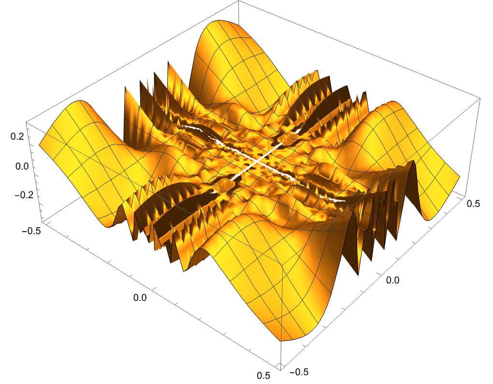
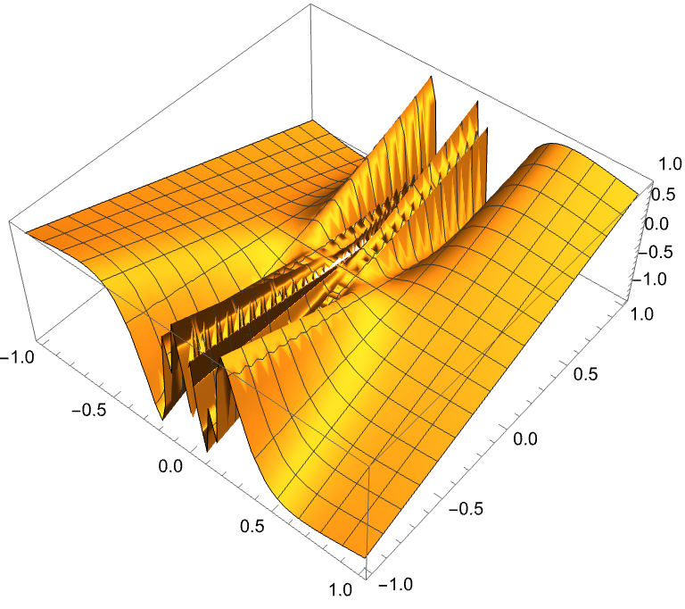

\(\text{Euclid}\) 空间上的极限和连续¶
\(\text{Euclid}\) 空间上的距离与极限¶
定义 11.1.1¶
- \(\text{Euclid}\) 空间 \(R^n\) 中任意两点 \(\vec{x}, \vec{y}\) 之间的距离定义为
-
\[|\vec{x}-\vec{y}| = \sqrt{\sum_{i=1}^{n}(x_i-y_i)^2}\]
- 并称
-
\[||\vec{x}|| = \sqrt{\sum_{i=1}^{n}x_i^2}\]
- 为 \(\vec{x}\) 的 \(\text{Euclid}\) 范数 (模长)
-
定理 11.1.1¶
- 距离满足以下性质
- 正定性: \(|\vec{x}-\vec{y}|\geq 0\), 且 \(|\vec{x}-\vec{y}|=0\iff \vec{x}=\vec{y}\)
- 对称性: \(|\vec{x}-\vec{y}|=|\vec{y}-\vec{x}|\)
- 三角不等式: \(|\vec{x}-\vec{y}|+|\vec{y}-\vec{z}|\geq |\vec{x}-\vec{z}|\)
定义 11.1.2 邻域¶
- 设 $\vec{a} = (a_1, a_2, \cdots, a_n)\in R^n, \delta >0, $, 则点集
-
\[O(\vec{a}, \delta) = \{\vec{x}\in R^n:|\vec{x}-\vec{a}|<\delta\}\]
- 称为点 \(\vec{a}\) 的 \(\delta\) 邻域
-
定义 11.1.3 极限¶
- 设 \(\{\vec{x}_n\}\) 是 \(R^n\) 中的一个点列, \(\vec{a}\in R^n\), 如果对任意 \(\varepsilon>0\), 存在 \(N\in \mathbb{N}\), 使得当 \(n>N\) 时, 有
-
\[|\vec{x}_n-\vec{a}|<\varepsilon\]
- 则称 \(\vec{a}\) 是点列 \(\{\vec{x}_n\}\) 的极限, 记为
-
\[\lim_{n\to\infty}\vec{x}_n = \vec{a}\]
-
- 点列不收敛就称为发散
定理 11.1.2¶
- \(\lim\limits_{n\to\infty}\vec{x}_n = \vec{a} \iff \lim\limits_{n\to\infty}(x_k)_i=a_i\)
定义 11.1.4¶
- 设 \(S\subset R^n\), 若存在正数 \(M\), 使得对任意 \(\vec{x}\in S\) 有 \(||\vec{x}||\leq M\), 则称 \(S\) 为有界集
开集和闭集¶
-
对 \(\vec{x}\in R^n, S\subset R^n\)
- 若存在 \(\delta>0\), 使得 \(O(\vec{x}, \delta)\subset S\), 则称 \(\vec{x}\) 为 \(S\) 的内点
- 若存在 \(\delta>0\), 使得 \(O(\vec{x}, \delta)\cap S=\emptyset\), 则称 \(\vec{x}\) 为 \(S\) 的外点
-
若任意 \(\vec{x}\) 的邻域都既包含 \(S\) 中的点又包含 \(S\) 外的点, 则称 \(\vec{x}\) 为 \(S\) 的边界点
-
若存在 \(\vec{x}\) 的邻域 \(O(\vec{x}, \delta)\) 使得 \(O(\vec{x}, \delta)\cap S=\{\vec{x}\}\), 则称 \(\vec{x}\) 是孤立点
-
若 \(\vec{x}\) 的任何邻域都包含 \(S\) 中无穷多个点, 则称 \(\vec{x}\) 为聚点
-
定理 11.1.3¶
- \(\vec{x}\) 是 \(S\) 聚点的充要条件是:存在 \(S\) 中的点列, 收敛到 \(\vec{x}\)
定义 11.1.5¶
- 若 \(S\) 中的点都是内点, 则称 \(S\) 为开集
- 若 \(S\) 包含了其所有聚点, 则称 \(S\) 为闭集
- \(S\) 和其聚点全体 \(S'\) 的并集称为 \(S\) 的闭包, 记为 \(\bar{S}\)
[!NOTE] 以后记 \(S\underset{closed}{\subset}T\) 表示 \(S\) 是 \(T\) 的闭子集, \(S\underset{open}{\subset}T\) 表示 \(S\) 是 \(T\) 的开子集
定理 11.1.4¶
- \(S\underset{closed}{\subset} R^n \iff S^c\underset{open}{\subset} R^n\)
引理 11.1.1 \(\text{De Morgan}\) 定律}¶
- 设 \(\{S_\alpha\}\) 是 \(R^n\) 的子集族, 则
-
\[\left(\bigcup_{\alpha}S_\alpha\right)^c = \bigcap_{\alpha}S_\alpha^c\]
-
\[\left(\bigcap_{\alpha}S_\alpha\right)^c = \bigcup_{\alpha}S_\alpha^c\]
-
定理 11.1.5¶
- 开集对的任意并和有限交封闭
- 闭集对的任意交和有限并封闭
\(\text{Euclid}\) 空间上的基本定理¶
- 推广, 以 \(n=2\) 为例
定理 11.1.6 闭矩形套定理¶
- 设 \(\Delta_k = [a_k, b_k]\times [c_k, d_k]\) 是 \(R^2\) 上的闭矩形, 如果
-
\[\Delta_1\supset \Delta_2\supset \cdots \supset \Delta_k\supset \cdots\]
- \(\(\lim_{k\to\infty}(b_k-a_k)=0, \lim_{k\to\infty}(d_k-c_k)=0\)\) 则存在唯一一点 \(\vec{a}=(\xi, \eta)\) 属于所有 \(\Delta_k\) 且
-
\[\lim_{k\to\infty}a_k=\lim_{k\to\infty}b_k=\xi\]
-
\[\lim_{k\to\infty}c_k=\lim_{k\to\infty}d_k=\eta\]
-
定理 11.1.6 \(\text{Cantor}\) 闭区域套定理¶
-
设 \(\Delta_k\) 是 \(R^n\) 上的闭区域, 如果
-
\[\Delta_1\supset \Delta_2\supset \cdots \supset \Delta_k\supset \cdots\]
-
\(\(\lim_{k\to\infty}\text{diam}(\Delta_k)=0\)\) 则存在唯一一点 \(\vec{a}\) 属于所有 \(\Delta_k\)
-
这里 \(\text{diam}(\Delta_k) = \sup\{|\vec{x}-\vec{y}|:\vec{x}, \vec{y}\in \Delta_k\}\)
-
定理 11.1.7 \(\text{Bolzano-Weierstrass}\) 定理¶
- \(R^n\) 上有界点列必有收敛子列
推论 11.1.1¶
- \(R^n\) 上有界无限点集必有聚点
定义 11.1.6 \(\text{Cauchy}\) 列¶
- 设 \(\{\vec{x}_n\}\) 是 \(R^n\) 中的点列, 如果对任意 \(\varepsilon>0\), 存在 \(N\in \mathbb{N}\), 使得当 \(n, m>N\) 时, 有
- \(\(|\vec{x}_n-\vec{x}_m|<\varepsilon\)\) 则称 \(\{\vec{x}_n\}\) 是 \(\text{Cauchy}\) 列
定理 11.1.8 \(\text{Cauchy}\) 收敛原理¶
- \(R^n\) 中的点列 \(\{\vec{x}_n\}\) 收敛的充要条件是 \(\{\vec{x}_n\}\) 是 \(\text{Cauchy}\) 列
紧集¶
定义 11.1.7¶
- \(S\subset R^n, U_\alpha\underset{open}{\subset} R^n, \alpha\in \Lambda, s.t.S\subset \bigcup_{\alpha}U\limits_\Lambda\), 则称 \(\{U_\alpha\}\) 为 \(S\) 的开覆盖
- 若 \(S\) 的任意开覆盖都有有限子覆盖, 则称 \(S\) 为紧集
[!NOTE] \(K\) 是 \(S\) 中紧集记为 \(K\underset{compact}{\subset}S\)
定理 11.1.9 \(\text{Heine-Borel}\) 定理¶
- \(R^n\) 上的点集 \(S\) 是紧集当且仅当 \(S\) 是有界闭集
定理 11.1.10¶
- 若 \(S\) 是 \(R^n\) 中的点集, 那么以下命题等价
- \(S\) 是紧集
- \(S\) 是有界闭集
- \(S\) 的任意无限子集在 \(S\) 中有聚点
多元连续函数¶
多元函数¶
[!NOTE] 以下都设 \(D\) 是 \(R^n\) 上的点集
定义 11.2.1¶
- 映射 \(f:D\to R^1\) 称为 \(D\) 上的多元函数
- 定义域, 值域, 陪域等同一元函数定义
多元函数的极限¶
定义 11.2.2¶
- \(D\underset{open}{\subset} R^n, \vec{x_0}\in D, f(x): D\setminus\{\vec{x}\}\to R^1\), 如果存在 \(A\in R, s.t.\forall \varepsilon>0, \exists\delta>0, s.t.\forall \vec{x}\in O(\vec{x_0}, \delta):\)
-
\[|f(\vec{x})-A|<\varepsilon\]
- 则称 \(\vec{x}\) 趋于 \(\vec{x_0}\) 时 \(f\) 收敛, 且称 \(A\) 是 \(f\) 当 \(\vec{x}\to\vec{x_0}\) 时的 \(n\) 重极限, 记为 \(\lim\limits_{\vec{x}\to\vec{x_0}}f(\vec{x})=A\)
-
[!NOTE] 为了方便.记 \(P(\vec{x}), P_0(\vec{x_0})\) 为点的左标, 然后记 \(\lim\limits_{\vec{x}\to\vec{x_0}}f(\vec{x})\) 为\(\lim\limits_{P\to P_0} f(p)=f(p_0)\)
累次极限¶
定义 11.2.3¶
- \(D\underset{open}{\subset} R^2, (x_0, y_0)\in D, z=f(x, y):D\setminus\{(x_0, y_0)\}\to R\), 若 \(\forall y\neq y_0, \lim\limits_{x\to x_0}f(x, y)\exists\) 且 \(\lim\limits_{y\to y_0}\lim\limits_{x\to x_0}f(x, y)\exists\), 那么称词极限值为函数在点 \((x_0, y_0)\) 先对 \(x\) 再对 \(y\) 的二次极限
[!NOTE] 同理可以定义先对 \(y\) 再对 \(x\) 的二次极限, 注意重极限和累次极限之间的存在性并没有任何关系
设 \(f(x, y) = \begin{cases} (x^2+y^2)\sin(1/x)\cos(1/y) & x\neq 0, y\neq 0\\0 & otherwise \end{cases}\)
重极限存在为0, 累次极限不存在 
设 \(f(x, y) = \begin{cases} y\sin(1/x) & x\neq 0, y\neq 0 \\ 0 & otherwise\end{cases}\)
重极限存在为, 累次有一个不存在 
[!IMPORTANT] 一个二次极限存在不代表另外一个二次极限也存在, 及时两者都存在也不一定相等(也就是不一定能交换求和次序), 但是当二重极限也存在的时候, 有结论
定理 11.2.1¶
- 若二重极限 \(\lim\limits_{(x, y)\to(x_0, y_0)}f(x, y)=A\) 存在, 且当 \(x\neq x_0\) 时, 存在极限 \(\lim\limits_{y\to y_0} f(x, y)=\varphi(x)\), 那么 \(f\) 先对 \(y\) 后对 \(x\) 的二次极限存在且与二重极限相等, 即
-
\[\lim\limits_{x\to x_0}\lim\limits_{y\to y_0}f(x, y) =\lim\limits_{x\to x_o}\varphi(x)= \lim\limits_{(x, y)\to(x_0, y_0)}f(x, y)=A\]
-
[!NOTE] 这表明如果函数的两个二次极限都存在而且二重极限也存在, 那么三者相等, 也就是说, 此时极限之间可交换顺序
多元函数的连续性¶
定义 11.2.4¶
- \(D\underset{open}{\subset} R^n, f:D\to R^1, \vec{x_0}\in D\), 若 \(\forall \varepsilon>0, \exists\delta>0, s.t.\forall \vec{x}\in O(\vec{x_0}, \delta):\)
- \(\(f(\vec{x})-f(\vec{x_0})<\varepsilon\)\) 则称 \(f\) 在 \(\vec{x_0}\) 处连续
- 若 \(f\) 在 \(D\) 上的每一点都连续, 则称 \(f\) 在 \(D\) 上连续
向量值函数¶
定义 11.2.5¶
- \(D\subset R^n, \vec{f}:D\to R^m\), 称 \(\vec{f}\) 为 \(n\) 元 \(m\) 维向量值函数
定义 11.2.2'¶
- \(D\underset{open}{\subset} R^n, \vec{x_0}\in D, \vec{f}:D\setminus\{\vec{x_0}\}\to R^m\), 如果存在 \(\vec{A}\in R^m, s.t.\forall \varepsilon>0, \exists\delta>0, s.t.\forall \vec{x}\in O(\vec{x_0}, \delta):\)
- \(\(|\vec{f}(\vec{x})-\vec{A}|<\varepsilon\)\) 则称 \(\vec{x}\) 趋于 \(\vec{x_0}\) 时 \(\vec{f}\) 收敛, 记为
-
\[\lim\limits_{\vec{x}\to\vec{x_0}}\vec{f}(\vec{x})=\vec{A}\]
定义 11.2.4'¶
- \(D\underset{open}{\subset} R^n, \vec{f}:D\to R^m, \vec{x_0}\in D\), 若 \(\forall \varepsilon>0, \exists\delta>0, s.t.\forall \vec{x}\in O(\vec{x_0}, \delta):\)
- \(\(|\vec{f}(\vec{x})-\vec{f}(\vec{x_0})|<\varepsilon\)\) 则称 \(\vec{f}\) 在 \(\vec{x_0}\) 处连续
定理 11.2.2¶
- 向量值函数在点 \(\vec{x_0}\) 处连续的充要条件是其各个分量函数在 \(\vec{x_0}\) 对应的分量处连续
#### 定理 11.2.3 - 连续向量值函数的复合还是连续的
连续函数的性质¶
紧集上的连续映射¶
- 设点集 \(K\subset R^n, \vec{x_0}\in K, f:K\to R^m\) 为一向量值函数, 若 \(\forall \varepsilon>0, \exists\delta>0, s.t.\forall \vec{x}\in O(\vec{x_0}, \delta)\cap K:\)
- \(\(|f(\vec{x})-f(\vec{x_0})|<\varepsilon\)\) 则称 \(f\) 在 \(\vec{x_0}\) 处连续
定理 11.3.1¶
- 连续映射把紧集映为紧集
定理 11.3.2 有界性定理¶
- 设 \(K\subset R^n\) 是紧集, \(f:K\to R^m\) 是连续映射, 则 \(f(K)\) 是有界集
定理 11.3.3 最值定理¶
- 设 \(K\subset R^n\) 是紧集, \(f\) 是连续映射, 则 \(f\) 在 \(K\) 上有最大值和最小值
定义 11.3.2 一致连续¶
- 设 \(K\) 是 \(R^n\) 中点集, \(f:K\to R^m\), 为映射, 若 \(\forall \varepsilon>0, \exists\delta>0, s.t.\forall \vec{x}, \vec{y}\in K, |\vec{x}-\vec{y}|<\delta:\)
- \(\(|f(\vec{x})-f(\vec{y})|<\varepsilon\)\) 则称 \(f\) 在 \(K\) 上一致连续
定理 11.3.4 一致连续性定理¶
- \(K\underset{compact}{\subset} R^n, C(K)\ni f:K\to R^m \implies f\) 在 \(K\) 上一致连续
连通集上的连续映射¶
定义 11.3.3¶
-
设 \(S\) 是 \(R^n\) 中的点集, 若连续映射 \(\gamma:[0, 1]\to R^n\) 的像全部落在 \(S\) 中, 则称 \(\gamma\) 为 \(S\) 中的道路, \(\gamma(0), \gamma(1)\) 称为道路的起点和终点
-
若 \(S\) 中任意两点都可以用一条道路连通, 则称 \(S\) 为道路连通的, 或者称为连通集
定义 11.3.4¶
- 连通开集称为区域
- 区域的闭包称为闭区域
定理 11.3.5¶
- 连续映射把连通集映为连通集
推论 11.3.1¶
- 连续函数把连通紧集映射为闭区间(陪域是 \(R\) 时)
定理 11.3.6 介值定理¶
- 连续函数在紧集上取到介于最大值和最小值之间的任意值(包括最大值和最小值)